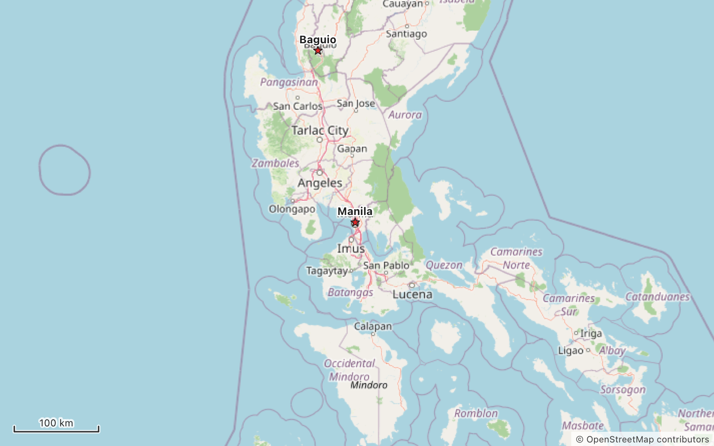

A map in an app
MapView pans, zooms (wheel, pinch, double click, a box), finds what was clicked, downloads basemap tiles as the view moves, and shows a scale bar, zoom buttons, a north arrow and a legend.
state m = startingMap()
cartography.MapView(map: m, legend: true) { hit in
if let h = hit {
picked = m.attributes(h)
}
}